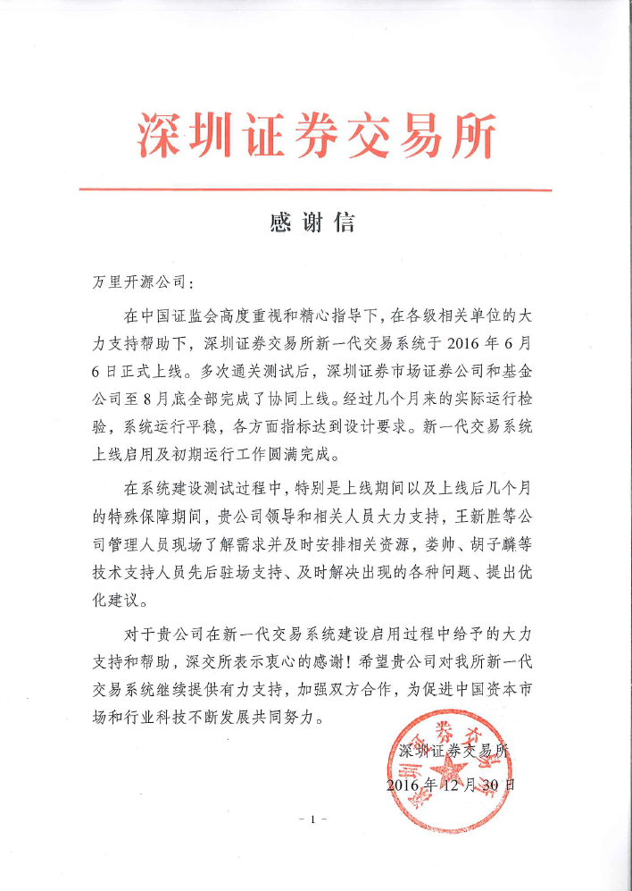

深交所数据库运维项目
深交所数据库运维项目
项目概述
深圳证券交易所新一代交易系统于2016年6月6日上线。在上线期间以及上线后几个月的特殊保障期间，深交所选择了万里来进行MySQL数据库运维服务。深交所采用基于共享存储的高可靠方案，通过HA软件实现MySQL的高可靠，数据存放外部共享存储，主备数据库使用同一份数据。客户端通过浮动IP访问MySQL。
服务方案
万里数据库团队在数据库运维服务期间进行7*24 小时服务，派驻人员进驻深交所现场；并在现场配有技术支持和研发双重保障机制来确保深交所新一代交易系统高效实施，及时解决出现的各种问题、提出优化建议，为深交所系统优化新一代交易系统做深入调优，并为深交所MySQL运维提供保障。
核心亮点
服务及时：MySQL运维7*24 小时服务，迅速派驻现场人员进驻现场。
服务到位：专业技术支持团队，重大项目研发现场支持，技术支持 + 研发双重保障机制确保项目高效实施，提供开发支持、系统优化和驻场支持等多种现场服务内容。
服务灵活：在深交所有需求时第一时间反馈至研发，代码级产品优化及应用定制，充分满足深交所个性化需求。深交所给了我们表扬信，以表彰我们优异的服务质量

项目意义
在深交所系统建设测试过程中，特别是上线期间以及上线后几个月的特殊保障期间，万里的运维服务，及时解决了出现的各种问题并提出优化意见。 经过几个月的实际检验，系统运行平稳，各方面指标达到技术要求，保障了深交所新一代交易系统上线的启用及初期运行工作的圆满完成。